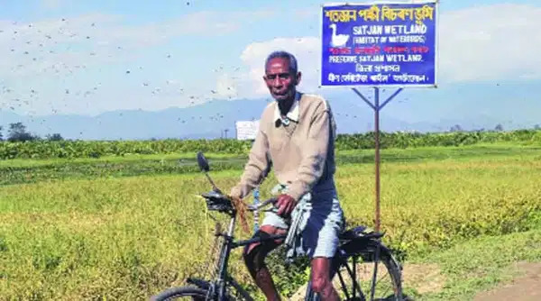

Although, water bodies such as Deepor Beel and Maguri Beel are well known for hosting birds, there are also smaller patches of wetlands which do not meet the international criteria of being a Ramsar Site or an Important Birding Area (IBA), but are equally important for the ecosystem as well as the communities residing alongside. One such example of a water body is Satajaan, a wetland situated in the North-Lakhimpur district of Assam. It is at a distance of approximately 8 km from the Lakhimpur township. The infamous wetland situated adjacent to the Pahumara-Kimin state highway and National Highway 15 is one of the last surviving wetlands of the region hosting enormous bird species every year. Being aside the river Ranganadi, the wetland with marshes and dense fringing vegetation receives fresh water recharge every monsoon. According to a research work published in December 2019 by Department of Botany, Rajiv Gandhi University, Arunachal Pradesh, there are 262 species of vascular plants on the wetland.
The wetland hordes the bird species from the onset of October till their return by the end of March or early April, enjoying the landscape which supports the roosting and breeding of birds. Some of the local non-migratory water birds such as White breasted Waterhen, Bronze-winged Jacana, Eurasian Moorehen, Grey-headed Swamphen and many others can be found here perennially. The migratory birds such as Gadwall which flies across different demographic conditions to reach the flood plains of Assam every year, too finds its shelter in this wetland. The local migratory waterfowls such as Lesser-whistling Duck, Fulvous-whistling Duck, Indian Spotbill Duck etc., get dispersed post-winter during their breeding season. In addition to the aforementioned water birds, Satajaan also accommodates local and migratory terrestrial and bush birds like Coucals, variety of Warblers, Starlings, Wagtails, Pipits etc. It was indeed astonishing to notice the density of birds in a relatively smaller area (39 acres).
When the changing climate is already showing its impact on the ecosystem globally, the health of this wetland have been further challenged by several anthropogenic activities.The locals says that one of the primary reasons for the degradation of the wetland is yearly winter picnic accompanied by littering of plastic wastes, noise from loud speakers and clearing bushes for fire. Unfortunately, the time of the year also coincides with the arrival of migratory birds and human activities such as picnics disturb the natural state of avifauna. The wetland which is claimed to have got created by the devastating earthquake of 1950, has also observed the disturbances caused by sand mining along the river Ranganadi during the non-monsoon season. It is the same river which is already under pressure due to the upstream water infrastructure projects and has observed reduced hydrological flow. Presence of non-insulated high-tension wires around the wetland have added to the threats of lives of these flying birds and frequent cases of electrocution of birds are observed.
There should be frequent documentation of the birds which will provide the temporal diversity of avifauna in the wetland. The birders can also upload their sightings to eBird.org (a citizen science based online inventory to report bird and their count in a given area) to make the data accessible to public. Interdisciplinary researches must be conducted to understand this wetland from technical as well as social perspective. Along with the birds, there could also be a decent diversity of Herpetofauna and a documentation can be carried out, the results of which might interest researchers across the globe and demand conservation of this wetland from a policy level. If Satajaan wetland is not scientifically managed following the Wetlands (Conservation and Management) Rules, 2017 (updated on 2020) by Ministry of Environment, Forest and Climate Change, Government of India, there is always a chance that the wetland will lose its charisma as well as importance of being resourceful. Intervention from the Government will also be utmost important to prohibit any kind of disturbances to the wetland through human activities, especially when winter is here and picnic plans are on its way. However, the efforts led need not be limited to Satajaan or any one wetland. Each swamp has its own importance and must be protected to the level best.
 Baliram Gogoi is a busy man. The 78-year-old wakes up around 4.30 am despite the cold, takes a stick and his mobile phone, and makes a round of Satajan, a 270-bigha wetland on the banks of the Ranganadi here, checking if any poacher had got closer to trap a bird. “Satajan is not only home to so many species of birds but is also a destination for several migratory species,” said Baliram, a farmer who was earlier associated with the district unit of the Village Defence Organisation, a body formed during the Chinese aggression of 1962 to help villagers. Baliram knows most of the species by their local and English names. “It is difficult to remember the scientific names, so I have bought several books to refer to whenever I need to find out or tell visitors about the different birds,” he said. Bird species that have been listed here include common teal, purple moorhen, lesser adjutant stork, gadwall, lesser whistling teal, night heron, ferruginous duck, darter or snake-bird, and spotted bill among others. Sadly, he is no more with us and his work is being carried out by his son Mr. Lakhidhar Gogoi along with other members of the community.
Nothin